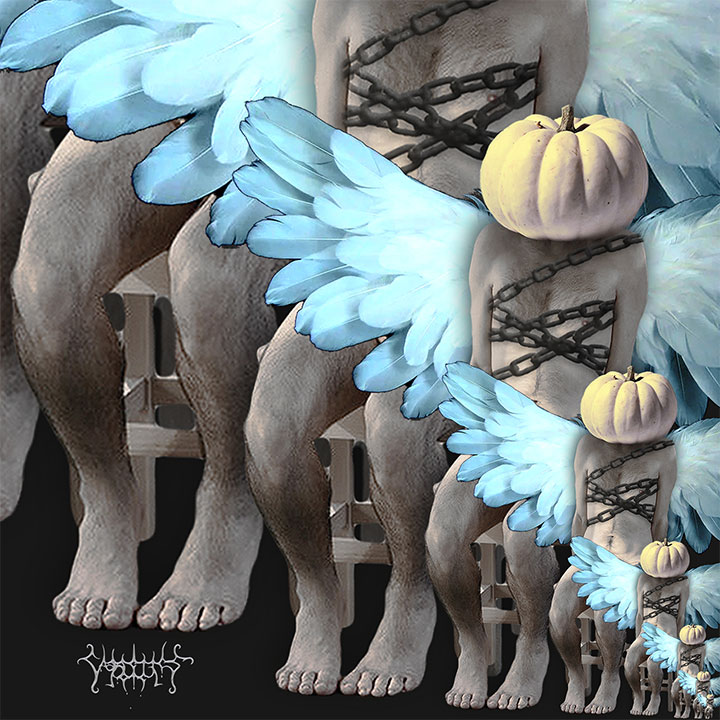
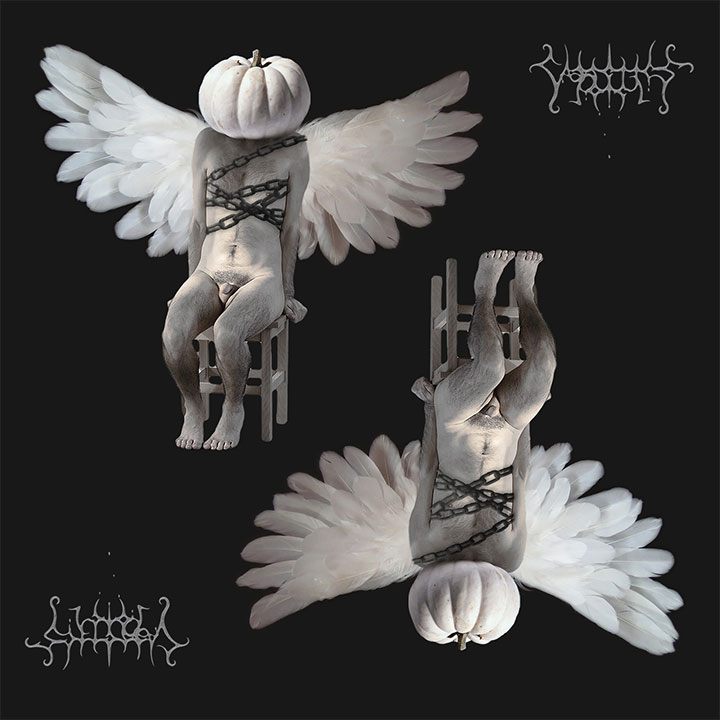
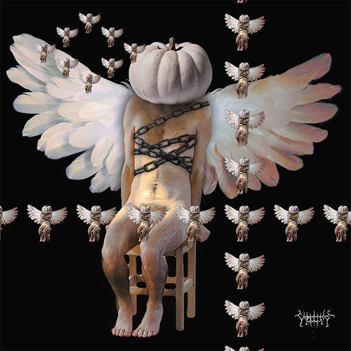
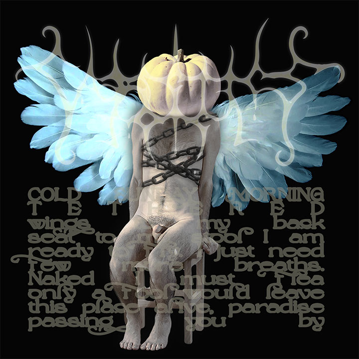
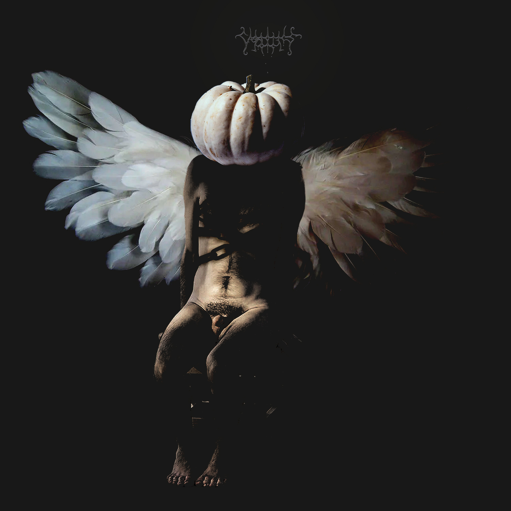

Flight of Icarus
Icarus. I am obsessed with this character that is a Jack O Lantern. I tell a story about him in a nonlinear fashion. Here he is before flight.






Icarus. I am obsessed with this character that is a Jack O Lantern. I tell a story about him in a nonlinear fashion. Here he is before flight.




